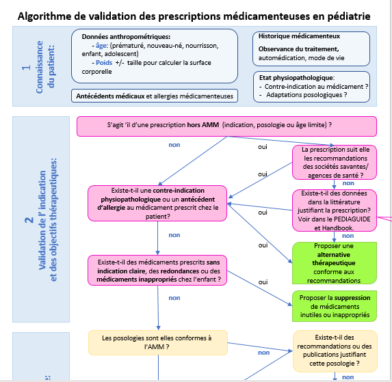
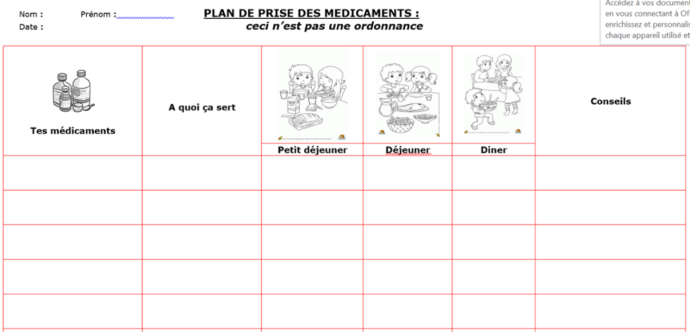

Pédiatrie: Analyse d'ordonnance
Table of Contents
1. Prescription
- Date de la prescription
- Identification du prescripteur
- Signature
- Identification du service
- Identification du patient
- Nom
- Prénom
- Sexe
- DDN1
- Pédiatrie:
- Poids
- Si nécessaire:
- Taille
- Surface corporelle
- Identification du médicament
- DCI
- Galénique
- Dosage
- Posologie
- Administration
- Mode d'emploi
- Durée de traitement
- Allergies
2. Médicaments
- Indication précise
- Bon choix
- Posologie correcte
- Surtout si index thérapeutique étroit
- AVK
- Acide Valproïque
- Théophylline
- Surtout si index thérapeutique étroit
- Interactions
- Pharmacologiques
- Physicochimiques
- Modalités d'administration:
- Instruments de mesure
- Pendant/En dehors des repas
- Plans de prise
- Conseils
- Prescriptions hors-AMM
3. Algorithme de Validation

Figure 1: L'analyse se fait selon un algorithme de validation spécifique aux populations pédiatriques.
4. Interactions Médicamenteuses
- Substances actives ⇔ substances auxilliaires
- Molécules ⇔ test biologiques
- Molécules ⇔ alimentation
5. Rédiger un Plan de Prise

Footnotes:
1
Date de naissance